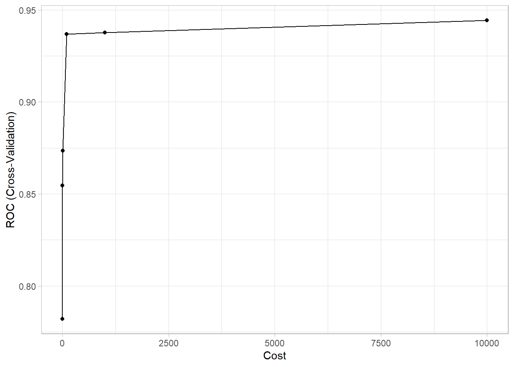
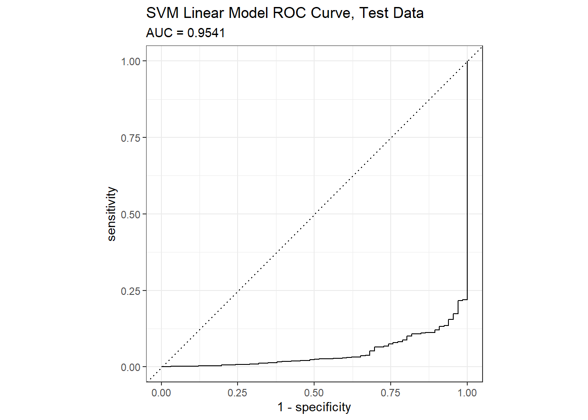
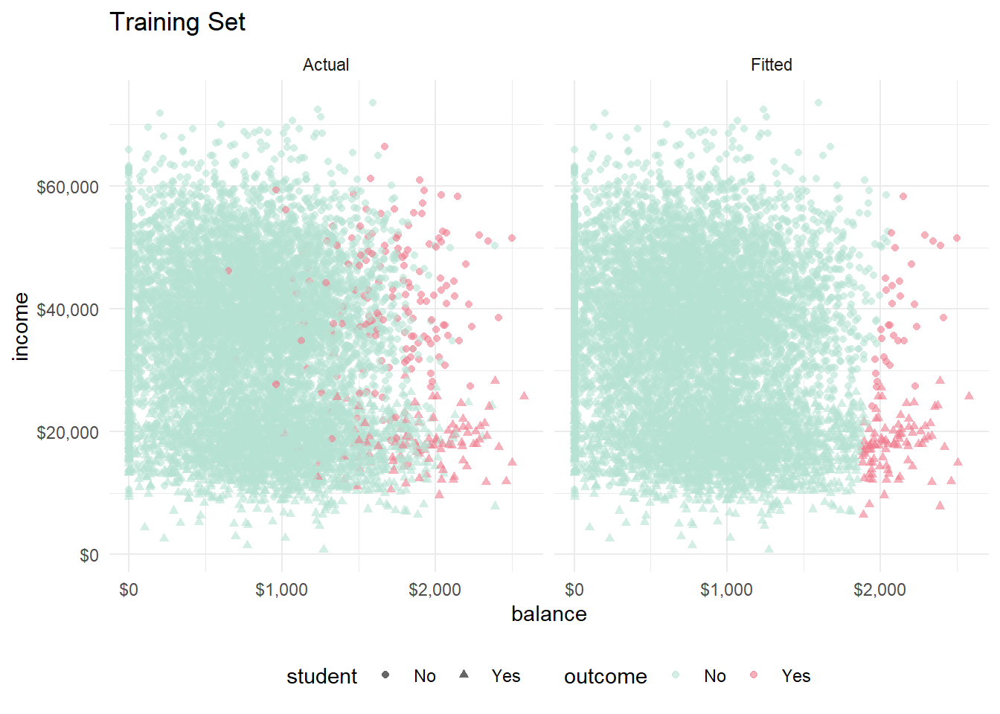
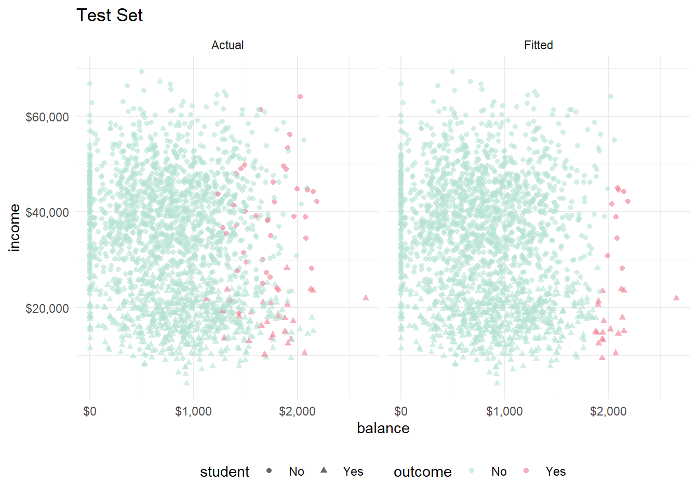
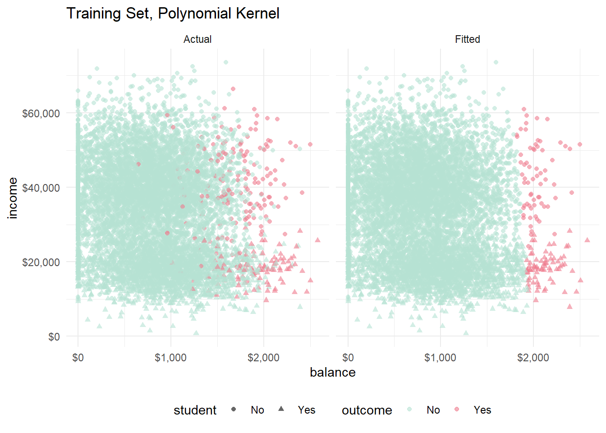
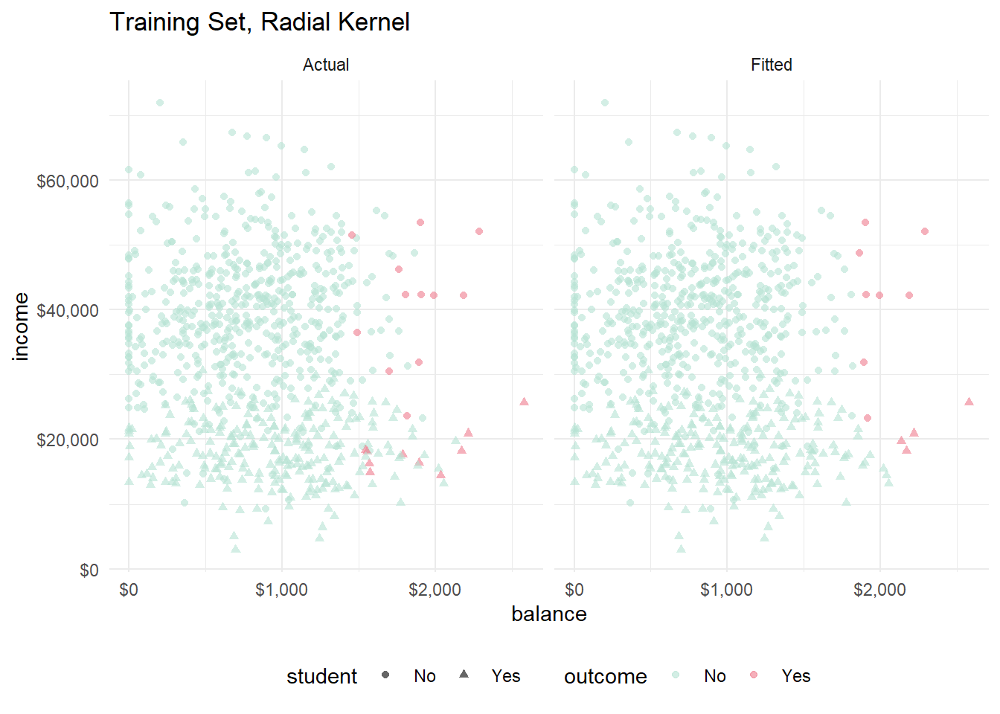

Chapter 6 Support Vector Machines
These notes rely on (James et al. 2013), (Hastie, Tibshirani, and Friedman 2017), (Kuhn and Johnson 2016), PSU STAT 508, and the e1071 SVM vignette.
Support Vector Machines (SVM) is a classification model that maps observations as points in space so that the categories are divided by as wide a gap as possible. New observations can then be mapped into the space for prediction. The SVM algorithm finds the optimal separating hyperplane using a nonlinear mapping. The hyperplane is defined by the observations that lie within a margin optimized by a cost hyperparameter. These observations are called the support vectors.
SVM is an extension of the support vector classifier which in turn is a generalization of the simple and intuitive maximal margin classifier. The maximal margin classifier is defined for cases where the data can be separated by a linear boundary (uncommon). The support vector classifier generalizes the maximal margin classifier by introducing a margin which permits some observations to land on wrong side of the hyperplane. The support vector machine generalizes still more by introducing non-linear hyperplanes. The best way to understand SVM is to start with the maximal margin classifier and work up.
I’ll learn by example, using the ISLR::Default data set to predict which customers will default on their credit card debt from its 3 predictor variables. I’m using this Dataaspirant tutorial for guidance. The three predictors are student (Yes|No), current credit card balance, and annual income.
library(tidyverse)
library(caret)
library(recipes)
library(janitor) # for tabyl()
library(tictoc)
dat <- ISLR::Default
skimr::skim(dat)| Name | dat |
| Number of rows | 10000 |
| Number of columns | 4 |
| _______________________ | |
| Column type frequency: | |
| factor | 2 |
| numeric | 2 |
| ________________________ | |
| Group variables | None |
Variable type: factor
| skim_variable | n_missing | complete_rate | ordered | n_unique | top_counts |
|---|---|---|---|---|---|
| default | 0 | 1 | FALSE | 2 | No: 9667, Yes: 333 |
| student | 0 | 1 | FALSE | 2 | No: 7056, Yes: 2944 |
Variable type: numeric
| skim_variable | n_missing | complete_rate | mean | sd | p0 | p25 | p50 | p75 | p100 | hist |
|---|---|---|---|---|---|---|---|---|---|---|
| balance | 0 | 1 | 835.37 | 483.71 | 0.00 | 481.73 | 823.64 | 1166.31 | 2654.32 | ▆▇▅▁▁ |
| income | 0 | 1 | 33516.98 | 13336.64 | 771.97 | 21340.46 | 34552.64 | 43807.73 | 73554.23 | ▂▇▇▅▁ |
I’ll build and compare models the customary way, splitting dat (n = 10,000) into dat_train (80%, n = 8001) to fit models, and dat_test (20%, n = 1999) to compare performance on new data.
set.seed(123)
train_index <- createDataPartition(y = dat$default, p = 0.8, list = FALSE)
dat_train <- dat[train_index, ]
dat_test <- dat[-train_index, ]createDataPartition() is nice because it creates equal representation of the response variable in the partition. Only 3.3% of applicants default, so this is a difficult prediction problem.
## dat$default n percent
## No 9667 0.9667
## Yes 333 0.03336.1 Maximal Margin Classifier
The maximal margin classifier is the optimal hyperplane defined in the (rare) case where two classes are linearly separable. Given an \(X_{n \times p}\) predictor matrix with a binary response variable \(y \in \{-1, 1\}\) it might be possible to define a p-dimensional hyperplane \(h(x) = \beta_0 + \beta_1x_1 + \beta_2x_2 \dots + \beta_px_p = X_i^{'} \beta + \beta_0 = 0\) such that all of the \(y_i = -1\) observations fall on the negative side of the hyperplane and the \(y_i = +1\) observations fall on the positive side:
\[y_i \left(x_i^{'} \beta + \beta_0 \right) > 0\]
This separating hyperplane is a simple classifier, and the magnitude of \(\left(x_i^{'} \beta + \beta_0 \right)\) is an indicator of confidence in the predicted classification.
If you constrain \(\beta\) to be a unit vector, \(||\beta|| = \sum\beta^2 = 1\), then the products of the hyperplane and response variables, \(\left(x_i^{'} \beta + \beta_0 \right)\), are the positive perpendicular distances from the hyperplane. If a separating hyperplane exists, there are probably an infinite number of possible hyperplanes. One way to evaluate a hyperplane is to measure its margin, \(M\), the perpendicular distance to the closest observation.
\[M = \min \left\{y_i (x_i^{'} \beta + \beta_0) \right\}.\]
The maximal margin classifier is the hyperplane that maximizes \(M.\) The figure below (figure 9.3 from (James et al. 2013)) shows a maximal marginal classifier. The three vectors shown in the figure anchor the hyperplane and are called the support vectors. Interestingly, it is only these three observations that factor into the determination of the maximal marginal classifier.

So, to put it all together, if a separating hyperplane exists, one could calculate it by maximizing \(M\) subject to \(||\beta|| = 1\) and \(y_i (x_i^{'} \beta + \beta_0) \ge M\) for all \(i\). However, a separating hyperplane rarely exists. In fact, even if a separating hyperplane does exist, its maximal margin classifier is probably undesirably narrow. A maximal margin classifier is sensitive to outliers so it tends to overfit data.
6.2 Support Vector Classifier
The maximal margin classifier can be generalized to non-separable cases using a so-called soft margin. The generalization is called the support vector classifier. The soft margin allows some misclassification in the interest of greater robustness to individual observations.
The support vector classifier maximizes \(M\) subject to \(||\beta|| = 1\) and \(y_i (x_i^{'} \beta + \beta_0) \ge M(1 - \xi_i)\) and \(\sum \xi_i \le \Xi\) for all \(i\). The \(\xi_i\) are slack variables whose sum is bounded by some constant tuning parameter \(\Xi\). The slack variable values indicate where the observation lies: \(\xi_i = 0\) observations lie on the correct side of the margin; \(\xi_i > 0\) observation lie on the wrong side of the margin; \(\xi_i > 1\) observations lie on the wrong side of the hyperplane. \(\Xi\) sets the tolerance for margin violation. If \(\Xi = 0\), then all observations must reside on the correct side of the margin, as in the maximal margin classifier. \(\Xi\) controls the bias-variance trade-off: as \(\Xi\) increases, the margin widens and allows more violations, increasing bias and decreasing variance. Similar to the maximal margin classifier, only the observations that are on the margin or that violate the margin factor into the determination of the support vector classifier. These observations are the support vectors.
The figure below (figure 9.7 from (James et al. 2013)) shows two support vector classifiers. The one on the left uses a large \(\Xi\) and as a result includes many support vectors. The one on the right uses a smaller \(\Xi.\)

As \(\Xi\) increases, the number of violating observations increase, and thus the number of support vectors increases. This property makes the algorithm robust to the extreme observations far away from the hyperplane. The only shortcoming with the algorithm is that it presumes a linear decision boundary.
Let’s build a support vector classifier model to predict credit default in the ISLM:Default data set. I’ll build the model in caret with the svmLinear method using 10-fold cross-validation (CV-10) to optimize the hyperparameters. There is only one hyperparameter for this model, the cost parameter:
## model parameter label forReg forClass probModel
## 1 svmLinear C Cost TRUE TRUE TRUEI’m not sure if \(C = Xi\), but it seems to function the same way. The documentation notes in e1071::svm() say C is the “cost of constraints violation (default: 1)—it is the ‘C’-constant of the regularization term in the Lagrange formulation.” CV-10 will fit 10 models for each candidate value of C and keep the model with the best performance on resamples according to our evaluation metric. I can evaluate with “Accuracy”, “Kappa”, or “ROC”. I’ll use ROC, so I need to also set summaryFunction = twoClassSummary and classProbs = TRUE.
svmLinear expects the response variable to be a factor with labels that can double as R variable names. This data set is fine because default is a factor with labels “No” and “Yes”. The predictor variables should be of comparable scale, but that is not the case here: student is binary, balance has a range of $0 - $2654, and income has a range of $772 - $73,554. I’ll one-hot encode student and standardize balance and income inside a recipe object.
mdl_ctrl <- trainControl(
method = "cv", number = 10,
summaryFunction = twoClassSummary, classProbs = TRUE
)
rcpe <- recipe(default ~ ., data = dat_train) %>%
step_dummy(all_nominal(), -all_outcomes()) %>%
step_center(balance, income) %>%
step_scale(balance, income)
tic()
set.seed(1234)
capture.output(
mdl_svm_linear <- train(
rcpe,
data = dat_train,
method = "svmLinear",
metric = "ROC",
trControl = mdl_ctrl,
tuneGrid = expand.grid(C = c(1e-1, 1e0, 1e1, 1e2, 1e3, 1e4))
)
)## Loading required namespace: kernlab##
## Attaching package: 'kernlab'## The following object is masked from 'package:tictoc':
##
## size## The following object is masked from 'package:scales':
##
## alpha## The following object is masked from 'package:ordinal':
##
## convergence## The following object is masked from 'package:VGAM':
##
## nvar## The following object is masked from 'package:purrr':
##
## cross## The following object is masked from 'package:ggplot2':
##
## alphaI experimented with the tuneGrid and found that smaller values for C (C <= 10) produced poorer performance on resamples and on the holdout set. Unfortunately, the time to fit the models increased with C so that expand.grid(C = c(1e-1, 1e0, 1e1, 1e2, 1e3, 1e4) ran ~6 minutes.
The cross-validation maximized ROC with C = 10,000. The first three values (.1, 1, and 10) resulted in models that predicted no default every time.
## Support Vector Machines with Linear Kernel
##
## 8001 samples
## 3 predictor
## 2 classes: 'No', 'Yes'
##
## Recipe steps: dummy, center, scale
## Resampling: Cross-Validated (10 fold)
## Summary of sample sizes: 7201, 7201, 7200, 7201, 7200, 7201, ...
## Resampling results across tuning parameters:
##
## C ROC Sens Spec
## 1e-01 0.7819529 1.0000000 0.00000000
## 1e+00 0.8545441 1.0000000 0.00000000
## 1e+01 0.8735454 1.0000000 0.00000000
## 1e+02 0.9368640 1.0000000 0.02592593
## 1e+03 0.9375616 0.9949579 0.27207977
## 1e+04 0.9442658 0.9981890 0.20413105
##
## ROC was used to select the optimal model using the largest value.
## The final value used for the model was C = 10000.As C increases, the model variance decreases at the expense of more bias. The plot of the optimization results makes you wonder if C = 100 is basically just as good as C = 10,000 at a fraction of the fitting time.

Predictions on the holdout set yield 96.8% accuracy. It found 15 of the 66 defaulters (sensitivity = 0.227), and misclassified 13 of the 1933 non-defaulters (specificity = 0.993).
preds_svm_linear <- bind_cols(
dat_test,
predict(mdl_svm_linear, newdata = dat_test, type = "prob"),
Predicted = predict(mdl_svm_linear, newdata = dat_test, type = "raw")
)
confusionMatrix(preds_svm_linear$Predicted, reference = preds_svm_linear$default, positive = "Yes")## Confusion Matrix and Statistics
##
## Reference
## Prediction No Yes
## No 1920 51
## Yes 13 15
##
## Accuracy : 0.968
## 95% CI : (0.9593, 0.9753)
## No Information Rate : 0.967
## P-Value [Acc > NIR] : 0.433
##
## Kappa : 0.3055
##
## Mcnemar's Test P-Value : 3.746e-06
##
## Sensitivity : 0.227273
## Specificity : 0.993275
## Pos Pred Value : 0.535714
## Neg Pred Value : 0.974125
## Prevalence : 0.033017
## Detection Rate : 0.007504
## Detection Prevalence : 0.014007
## Balanced Accuracy : 0.610274
##
## 'Positive' Class : Yes
## Metrics::auc() will calculate the confusion matrix values from the model using the holdout data set. The AUC on the holdout set is 0.9541.
mdl_svm_linear_auc <- Metrics::auc(actual = preds_svm_linear$default == "Yes", preds_svm_linear$Yes)
yardstick::roc_curve(preds_svm_linear, default, Yes) %>%
autoplot() +
labs(
title = "SVM Linear Model ROC Curve, Test Data",
subtitle = paste0("AUC = ", round(mdl_svm_linear_auc, 4))
)
There are just a few predictors in this model, so there is a chance I can visualize the model.
fits_svm_linear <- bind_cols(
dat_train,
predict(mdl_svm_linear, newdata = dat_train, type = "prob"),
Predicted = predict(mdl_svm_linear, newdata = dat_train, type = "raw"),
)
bind_rows(
fits_svm_linear %>% mutate(set = "Actual", outcome = default),
fits_svm_linear %>% mutate(set = "Fitted", outcome = Predicted)
) %>%
ggplot(aes(x = balance, y = income, color = outcome)) +
geom_point(aes(shape = student), alpha = 0.6) +
theme_minimal() +
theme(legend.position = "bottom") +
scale_y_continuous(labels=scales::dollar_format()) +
scale_x_continuous(labels=scales::dollar_format()) +
scale_color_manual(values = list(No = "#B6E2D3", Yes = "#EF7C8E")) +
labs(title = "Training Set") +
facet_wrap(vars(set))
Looks like the hyperplane slopes slightly right, so high credit card balances are a little less likely to fall into default if income is high. Distinguishing students is difficult, but they are generally at the low end of the income scale, and they seem to exert a positive association with default. Let’s look at the same figure with the training set.
bind_rows(
preds_svm_linear %>% mutate(set = "Actual", outcome = default),
preds_svm_linear %>% mutate(set = "Fitted", outcome = Predicted)
) %>%
ggplot(aes(x = balance, y = income, color = outcome)) +
geom_point(aes(shape = student), alpha = 0.6) +
theme_minimal() +
theme(legend.position = "bottom") +
scale_y_continuous(labels=scales::dollar_format()) +
scale_x_continuous(labels=scales::dollar_format()) +
scale_color_manual(values = list(No = "#B6E2D3", Yes = "#EF7C8E")) +
labs(title = "Test Set") +
facet_wrap(vars(set))
Visually, the model performed consistently between the training and test sets.
6.3 Support Vector Machines
Enlarging the feature space of the support vector classifier accommodates nonlinear relationships. Support vector machines do this in a specific way, using kernels. Before diving into kernels, you need to understand (somewhat) the solution to the support vector classifier optimization problem.
The linear support vector classifier can be represented as
\[f(x) = \beta_0 + \sum_i^n \alpha_i \langle x, x_i \rangle.\]
That is, the classification of test observation \(x\) is the sum of the dot products of \(x\) with all the \(n\) observations in the training set, multiplied by the vector \(\alpha\) (plus the constant \(\beta_0\)). The \(\alpha\) vector is calculated from the \(n \choose 2\) dot products of the training data set. Actually, the classification is simpler than that because \(\alpha_i = 0\) for all observation that are not support vectors, so you can actually represent the solution as
\[f(x) = \beta_0 + \sum_{i \in S} \alpha_i \langle x, x_i \rangle\] where \(S\) is the set of support vector indices.
Now, you can generalize the inner dot product with a wrapper function, called a kernel, \(K(x_i, x_{i^{'}})\).
\[f(x) = \beta_0 + \sum_{i \in S} \alpha_i K(x, x_i)\]
To get the the support vector classifier, you’d defined \(K\) to be a linear kernel:
\[K(x_i, x_i^{'}) = \langle x, x_i \rangle\]
But you could also use other kernels, like the polynomial of degree \(d\),
\[K(x, x') = (1 + \langle x, x' \rangle)^d\]
or radial
\[K(x, x') = \exp\{-\gamma ||x - x'||^2\}.\]
The figure below (figure 9.9 from (James et al. 2013)) shows two support vector classifiers. The one on the left uses a polynomial kernel and the one on the right uses a radial kernel.

The SVM model can be expressed in the familiar “loss + penalty” minimization structure, \(\min_{\beta} \left \{ L(X,y,\beta) + \lambda P(\beta) \right \}\) as
\[\min_\beta \left \{ \sum_{i=1}^n \max [0, 1-y_i f(x_i)] + \lambda \sum_{j=1}^p \beta_j^2 \right \}\]
Increasing \(\lambda\), shrinks \(\beta\) and more violations to the margin are tolerated, resulting in a lower-variance/higher-bias model. The loss function above is known as a hinge loss.
Let’s build a support vector machine model to predict credit default in the ISLM:Default data set again. I’ll try a polynomial kernel with the svmPoly method and a radial kernal with svmRadial. svmPoly has three hyperparameters. What is the Scale parameter?
## model parameter label forReg forClass probModel
## 1 svmPoly degree Polynomial Degree TRUE TRUE TRUE
## 2 svmPoly scale Scale TRUE TRUE TRUE
## 3 svmPoly C Cost TRUE TRUE TRUEsvmRadial has two hyperparameters:
## model parameter label forReg forClass probModel
## 1 svmRadial sigma Sigma TRUE TRUE TRUE
## 2 svmRadial C Cost TRUE TRUE TRUEI’ll use the same trControl object as with the support vector classifier, and I’ll use the same one-hot encoded binaries and scaled and centered data. I fixed scale at its default value and tried polynomials of degree 1-3. I used the same candidate cost values.
tic()
set.seed(1234)
capture.output(
mdl_svm_poly <- train(
rcpe,
data = dat_train,
method = "svmPoly",
metric = "ROC",
trControl = mdl_ctrl,
tuneGrid = expand.grid(
C = c(1e-1, 1e0, 1e1, 1e2, 1e3, 1e4),
degree = c(1, 2, 3),
scale = 0.001)
)
)
toc()The model ran ~3 minutes. The cross-validation maximized ROC with degree = 2 and C = 0.1.
## Support Vector Machines with Polynomial Kernel
##
## 8001 samples
## 3 predictor
## 2 classes: 'No', 'Yes'
##
## Recipe steps: dummy, center, scale
## Resampling: Cross-Validated (10 fold)
## Summary of sample sizes: 7201, 7201, 7200, 7201, 7200, 7201, ...
## Resampling results across tuning parameters:
##
## C degree ROC Sens Spec
## 1e-01 1 0.9474883 0.9954749 0.36096866
## 1e-01 2 0.9476254 0.9949582 0.37948718
## 1e-01 3 0.9473626 0.9967679 0.33504274
## 1e+00 1 0.9470650 0.9972855 0.24886040
## 1e+00 2 0.8522411 0.9987080 0.07136752
## 1e+00 3 0.8646715 0.9976727 0.17692308
## 1e+01 1 0.9027483 0.9997413 0.01851852
## 1e+01 2 0.8854205 0.9993533 0.16168091
## 1e+01 3 0.8923607 0.9976732 0.21039886
## 1e+02 1 0.9459051 0.9989664 0.04116809
## 1e+02 2 0.8955601 0.9971556 0.29358974
## 1e+02 3 0.8952502 0.9978026 0.19259259
## 1e+03 1 0.9469310 0.9993533 0.14415954
## 1e+03 2 0.8960461 0.9963798 0.23931624
## 1e+03 3 0.8954159 0.9963803 0.28162393
## 1e+04 1 0.9476159 0.9979320 0.23433048
## 1e+04 2 0.8932654 0.9963806 0.31168091
## 1e+04 3 0.8907370 0.9965098 0.31168091
##
## Tuning parameter 'scale' was held constant at a value of 0.001
## ROC was used to select the optimal model using the largest value.
## The final values used for the model were degree = 2, scale = 0.001 and C = 0.1.Here is svmRadial. At this point, I do not know how the sigma tuning parameter works, so I expanded around the default value used from tuneLength = 1.
tic()
set.seed(1234)
capture.output(
mdl_svm_radial <- train(
rcpe,
data = dat_train,
method = "svmRadial",
metric = "ROC",
trControl = mdl_ctrl,
tuneGrid = expand.grid(
C = c(1e-1, 1e0, 1e1, 1e2, 1e3),
sigma = c(.01, .1, 1.0)
)
)
)
toc()This model ran in ~11 minutes and optimized at C = 0.1 and sigma = 0.01.
## Support Vector Machines with Radial Basis Function Kernel
##
## 8001 samples
## 3 predictor
## 2 classes: 'No', 'Yes'
##
## Recipe steps: dummy, center, scale
## Resampling: Cross-Validated (10 fold)
## Summary of sample sizes: 7201, 7201, 7200, 7201, 7200, 7201, ...
## Resampling results across tuning parameters:
##
## C sigma ROC Sens Spec
## 1e-01 0.01 0.8943575 0.9957344 0.2515670
## 1e-01 0.10 0.7572569 0.9958631 0.3380342
## 1e-01 1.00 0.6919219 0.9959923 0.3457265
## 1e+00 0.01 0.8935443 0.9958640 0.2594017
## 1e+00 0.10 0.7581334 0.9968976 0.3044160
## 1e+00 1.00 0.6708154 0.9974147 0.2782051
## 1e+01 0.01 0.8926542 0.9970259 0.2743590
## 1e+01 0.10 0.8362050 0.9976729 0.2783476
## 1e+01 1.00 0.7456079 0.9974147 0.2632479
## 1e+02 0.01 0.8586855 0.9967684 0.2669516
## 1e+02 0.10 0.8819563 0.9978023 0.2746439
## 1e+02 1.00 0.8185661 0.9976731 0.2330484
## 1e+03 0.01 0.7735879 0.9975435 0.2743590
## 1e+03 0.10 0.8614572 0.9979315 0.2559829
## 1e+03 1.00 0.8147071 0.9985776 0.1958689
##
## ROC was used to select the optimal model using the largest value.
## The final values used for the model were sigma = 0.01 and C = 0.1.Here are the optimization plots I used to help tune the models.
p1 <- ggplot(mdl_svm_poly) + labs(title = "SVMPoly Tuning") +
theme_minimal() + theme(legend.position = "bottom")
p2 <- ggplot(mdl_svm_radial) + labs(title = "SVMRadial Tuning") +
theme_minimal() + theme(legend.position = "bottom")
gridExtra::grid.arrange(p1, p2, nrow = 1)
The polynomial model predictions on the holdout set yielded 96.85% accuracy. It found 20 of the 66 defaulters (sensitivity = 0.303), and misclassified 17 of the 1933 non-defaulters (specificity = 0.991). So the polynomial model found a few more defaulters at the expense of a few more mistakes.
The radial model predictions on the holdout set yielded 97% accuracy. It found 17 defaulters (sensitivity = 0.258), and misclassified 11 non-defaulters (specificity = 0.994). So the radial was somewhere between the linear and polynomial models.
preds_svm_poly <- bind_cols(
dat_test,
predict(mdl_svm_poly, newdata = dat_test, type = "prob"),
Predicted = predict(mdl_svm_poly, newdata = dat_test, type = "raw")
)
confusionMatrix(preds_svm_poly$Predicted, reference = preds_svm_poly$default, positive = "Yes")
preds_svm_radial <- bind_cols(
dat_test,
predict(mdl_svm_radial, newdata = dat_test, type = "prob"),
Predicted = predict(mdl_svm_radial, newdata = dat_test, type = "raw")
)
confusionMatrix(preds_svm_radial$Predicted, reference = preds_svm_radial$default, positive = "Yes")The AUCs on the holdout set is where 0.9536 for the polynmomial and 0.8836 for the radial.
## [1] 0.9536049## [1] 0.8835849Let’s see what the two models look like on the training data.
fits_svm_poly <- bind_cols(
dat_train,
predict(mdl_svm_poly, newdata = dat_train, type = "prob"),
Predicted = predict(mdl_svm_poly, newdata = dat_train, type = "raw"),
)
bind_rows(
fits_svm_poly %>% mutate(set = "Actual", outcome = default),
fits_svm_poly %>% mutate(set = "Fitted", outcome = Predicted)
) %>%
ggplot(aes(x = balance, y = income, color = outcome)) +
geom_point(aes(shape = student), alpha = 0.6) +
theme_minimal() +
theme(legend.position = "bottom") +
scale_y_continuous(labels=scales::dollar_format()) +
scale_x_continuous(labels=scales::dollar_format()) +
scale_color_manual(values = list(No = "#B6E2D3", Yes = "#EF7C8E")) +
labs(title = "Training Set, Polynomial Kernel") +
facet_wrap(vars(set))
fits_svm_radial <- bind_cols(
dat_train,
predict(mdl_svm_radial, newdata = dat_train, type = "prob"),
Predicted = predict(mdl_svm_radial, newdata = dat_train, type = "raw"),
)
bind_rows(
fits_svm_radial %>% mutate(set = "Actual", outcome = default),
fits_svm_radial %>% mutate(set = "Fitted", outcome = Predicted)
) %>%
ggplot(aes(x = balance, y = income, color = outcome)) +
geom_point(aes(shape = student), alpha = 0.6) +
theme_minimal() +
theme(legend.position = "bottom") +
scale_y_continuous(labels=scales::dollar_format()) +
scale_x_continuous(labels=scales::dollar_format()) +
scale_color_manual(values = list(No = "#B6E2D3", Yes = "#EF7C8E")) +
labs(title = "Training Set, Radial Kernel") +
facet_wrap(vars(set))
You can see the slight curvature in the hyperplane now. The polynomial and the radial models look pretty much identical to me.